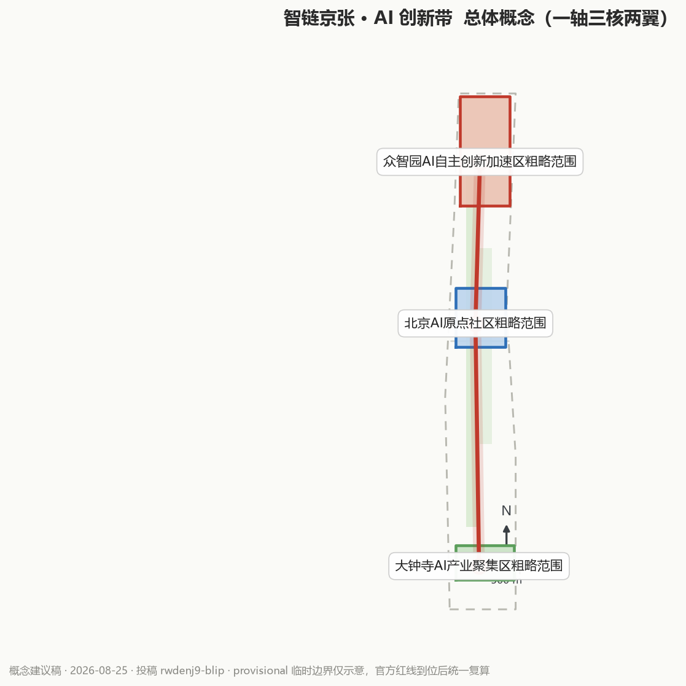
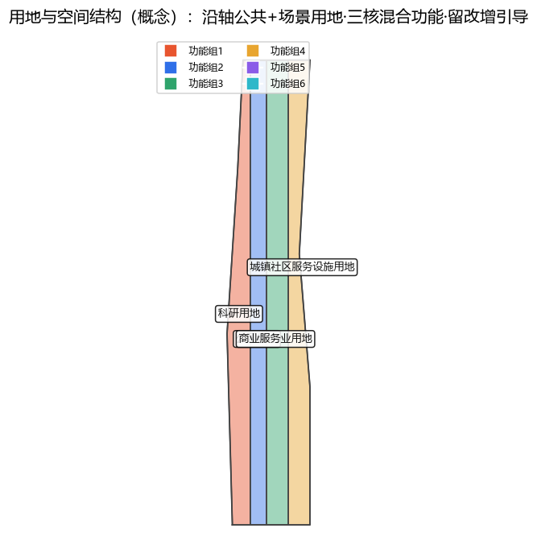
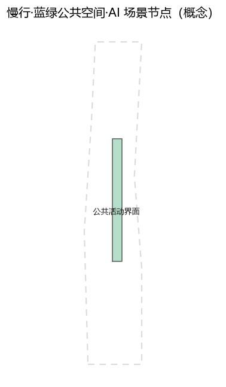
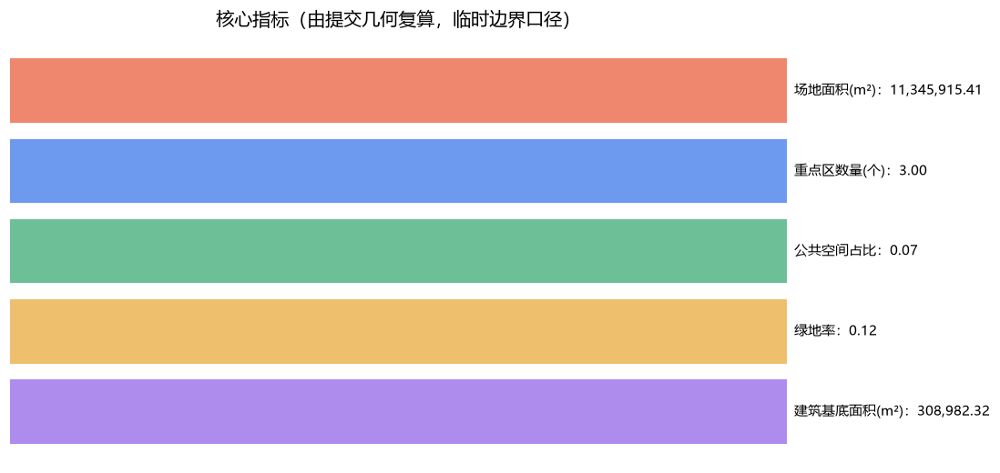

从人字形铁路到智能体网络 —— 总体概念方案（概念建议稿，provisional 边界，非官方红线）

L1 统筹研究范围 / L2 总体设计范围（京张铁路遗址公园活力带）/ L3 重点区域（三区）


京张遗址公园活力带 + 小月河滨水 + 社区绿地（概念）
留—改—增引导原则；不预设具体拆改留与高度（概念建议）
快赢—中期—长期三档项目清单（概念建议，非政府承诺）
12 张场景卡（含 4 个测试验证场景）分布于三区两翼多节点，见 proposal.md 第 6 章
| 指标 | 数值 |
|---|---|
| site_area_sqm | 11,345,915 |
| key_area_count | 3 |
| public_space_ratio | 0 |
| green_ratio | 0 |
| building_footprint_area_sqm | 308,982 |

agent.1–agent.6 均已覆盖：命名/结构、案例/生态、场景/画像、朝圣地标、文化叙事、运营体系
运行 scripts/self_check_submission.py 后回填（目标 PASS）
OFFICIAL-ANNOUNCEMENT / AGENT-TASKBOOK / BOUNDARY-SOURCE / KEY-AREA-SOURCE / SITE-PACKAGE / SOURCE-REGISTRY / PROCESSED-FACT-PACK
官方红线未公开 → 使用 provisional 粗略边界；所有空间结论为概念建议，待专业团队深化